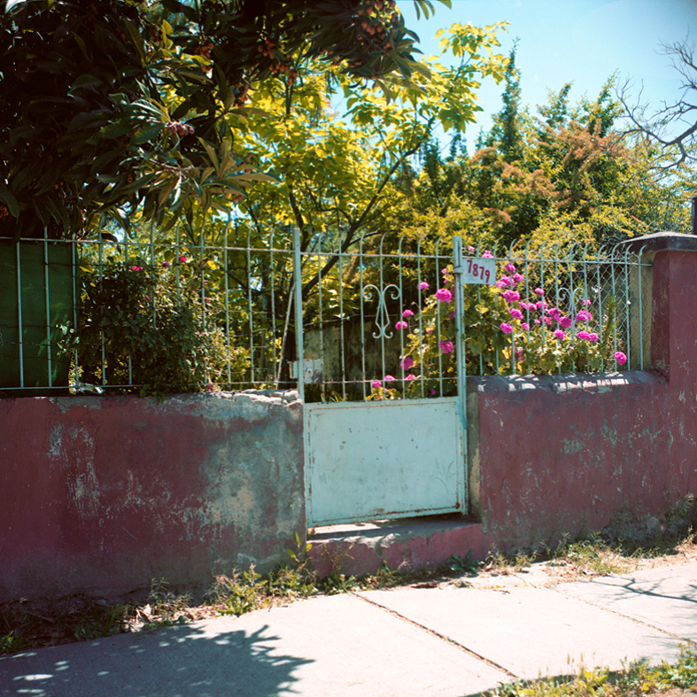
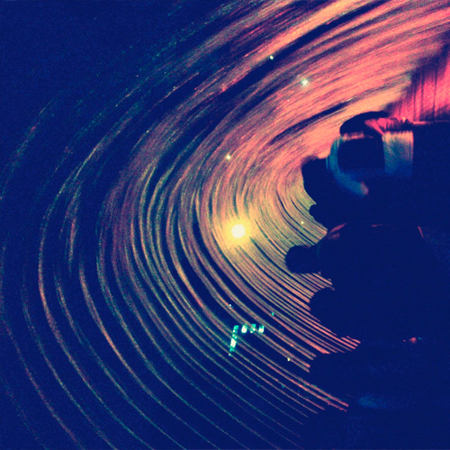
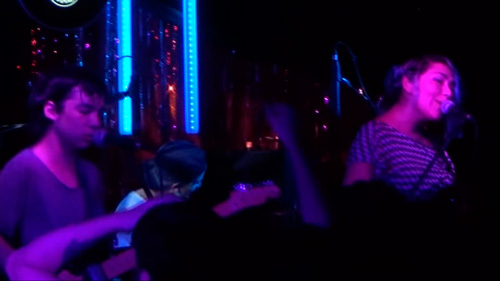
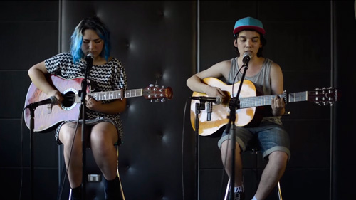
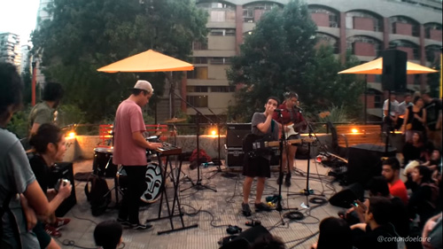

Press Kit
Foto por Javier Pino
Patio Solar ha emergido en la escena musical chilena como representantes de una generación de bandas que está renovando el sonido local con un pop que retorna a las guitarras y se aleja de los sintetizadores que han dominado la escena indie chilena en los últimos años
La banda liderada por Claudio Gajardo sale a la luz el año 2013 con su primer EP Driminsún, producido y grabado por Gajardo. Ese mismo año, Patio Solar adquiere su conformación actual con Claudio en voz y guitarra, Yaney Salgado en guitarra y coros, Camilo Jiménez en bajo, Javier Poduje en la batería y Franco Perucca en teclados.
Posteriormente, en 2014, Patio Solar se une a Piloto, sello que reúne a un grupo de bandas de esta nueva escena musical, y bajo el cual graban su primer disco de larga duración, “Temporada”, de la mano del productor Álex Rojas.
El álbum de 9 tracks lanzado a comienzos de 2015 amplía la paleta sonora de Patio Solar, conjugando su espíritu dream pop y la emocionalidad de sus letras con elementos guiados por la paleta del sello Neoyorquino Captured Tracks, el indie argentino y el pop chileno de autor de la última década. El resultado fluctuaría armoniosamente entre la experimentación y el trabajo de cantautor, más tradicional del rock latinoamericano.
En Santiago, Patio Solar ha realizado diversas presentaciones en vivo, presentándose en nuevos espacios de la escena local como CFT, el Centro Cultural Rojas Magallanes y el Ciclo Fisura, así como en locales que ya son un referente de la escena musical santiaguina como El Clan, Bar Loreto y la Sala SCD, además de shows en las ciudades de La Serena, Valparaíso y Concepción. Esto, sin nunca dejar de lado lugares como sus propias casas, patios y espacios abandonados en la periferia de Santiago.
La banda está pronta a lanzar su próximo EP, a editarse por Piloto el primer semestre de este año, y se encuentra en proceso de composición de su próximo álbum, que proyectan lanzar también este 2016.
|  |
Temporada (Piloto, 2015)
Descargar
|
|  |
Driminsun (Independiente, 2013)
Descargar y escuchar |
|
Pintura + Todo Trasciende Aquí en Bar Loreto
 |
El Vértigo (En vivo en Super 45 en Radio Zero)
 |
Lo bien que se ven en Pasarelas Verdes
 |
1er Lugar: Patio Solar - Temporada
5to Lugar: Patio Solar - Temporada
Patio Solar - Al Sur
2do Lugar: Patio Solar - temporada
2do Lugar: Patio Solar - Temporada
contacto@piloto.club